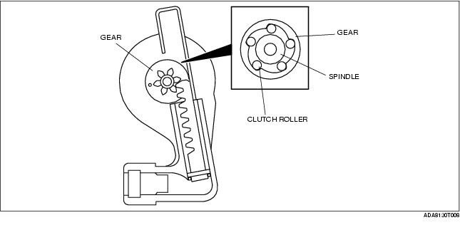

Pre-tensioner seat belt construction/operation
Operation
Before Activation (Normal Condition)
- • The clutch rollers, normally installed around the outside of the spindle, have been placed in the space inside the gear to maintain a condition of non-interference with the spindle.
- • The gear does not rotate even when the belt webbing is withdrawn and retracted because the spindle and gear are not engaged.

During Activation
1. When the pre-tensioner seat belt system receives an operation signal from the SAS control module, the gas generator generates gas which pushes up the piston in each cylinder.
2. The piston moves upward while at the same time rotating the gear.
3. The clutch rollers inside the gear are pushed against the spindle by the rotation of the gear. In this way, the gear and spindle are engaged.
4. The belt webbing retracts in accordance with the gear rotation.